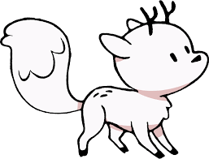
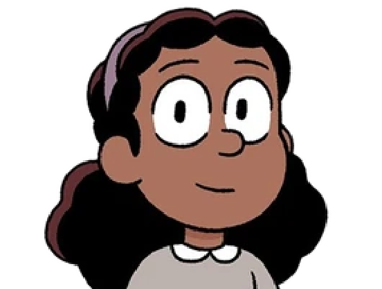
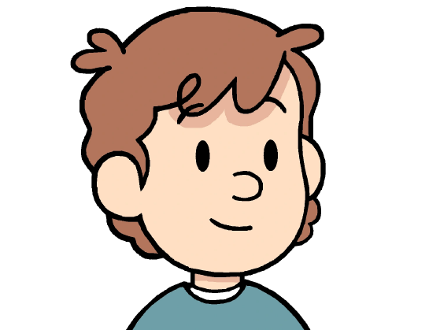

About Hilda
Hilda is a curious and brave adventurer from the magical universe of the animated series Hilda, inspired by Luke Pearson's graphic novels. With her ever-present spirit of exploration, she embarks on extraordinary adventures in a world where fantastical creatures and urban realities intertwine.
His World
Trolberg
Trolberg is the main city in which the universe of Hilda unfolds. Nestled between mountains and the sea, Trolberg combines the charm of a modern city with the mystical aura of its creatures and legends. At first glance, it appears to be an ordinary town with its buildings, bustling streets, and inhabitants. But behind this urban facade, mysteries lurk around every corner: trolls sleeping near the city walls, invisible spirits, and giants wandering on the horizon. This blend of contemporary life and the supernatural gives Trolberg a unique atmosphere, where every adventure is just within reach.
His Friends
Twig
- Hilda’s loyal pet and companion.
- A unique hybrid of a fox and a deer.
- Brave and dependable, he helps Hilda navigate the magical world.
- His playful and curious nature adds excitement to their adventures.
Frida
- Smart and determined.
- Excels in school and is very knowledgeable.
- Often acts as the voice of reason in the group.
- Practical and organized, she helps plan their adventures.
David
- Kind-hearted and somewhat timid.
- Often scared of the supernatural but tries to be brave.
- Supportive of Hilda and Frida, always ready to lend a hand.
- His gentle nature balances the group dynamic.